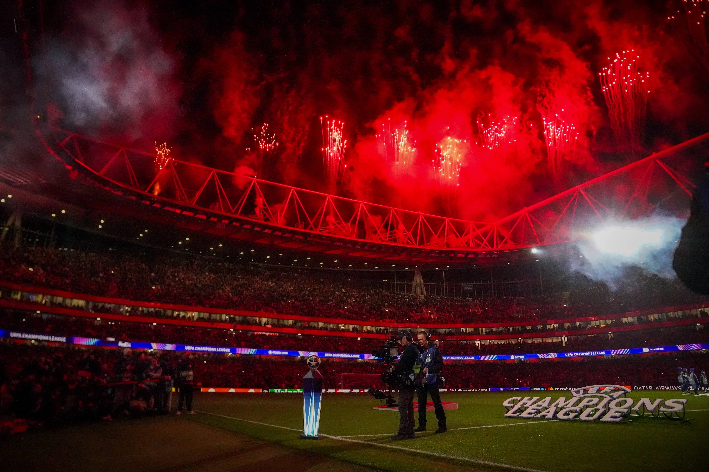

Come on you Gunners




Arsenal F.C. was founded in 1886 in Woolwich, southeast London, by workers at the Royal Arsenal armaments factory. Originally called Dial Square, the club soon became Royal Arsenal and later Woolwich Arsenal before moving to north London in 1913 and shortening its name to Arsenal. Arsenal became one of England’s dominant clubs under manager Herbert Chapman in the 1930s, winning multiple league titles and helping modernize football tactics, training, and kit design. The club added more success after World War II, especially under manager Arsène Wenger, who managed from 1996 to 2018. Wenger transformed Arsenal with attacking football, sports science, and international scouting. One of the club’s greatest achievements came in the 2003–04 season, when Arsenal went unbeaten in the Premier League and earned the nickname “The Invincibles.” Famous players throughout Arsenal history include Thierry Henry, Dennis Bergkamp, Tony Adams, and Patrick Vieira. The club played at Highbury Stadium until 2006, then moved to the larger Emirates Stadium. Arsenal remains one of the most successful and widely supported clubs in English football, with numerous league titles and FA Cups.